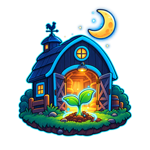

Tiiny App Farm
Version
Grown by Titanium Computing.
Made by
Titanium Computing
The shop that builds and keeps the farm.
Jason Brashear
Wrote the farm and this launcher.
Built for
Tiiny
The AI Pocket Lab every app talks to.
Part of
tiinyapp.farm
The farm these apps are grown on.
Brought to you by Titanium Bot
Agents that do the work while you sleep.
Source
tiinyapp-farm-launcher
The launcher, in the open on GitHub.
Licence
Free to read, use and change.
Check for updates
Show the log